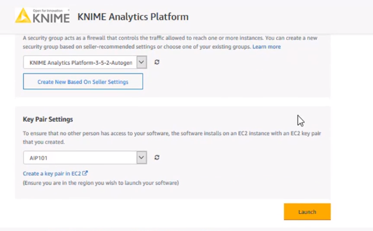
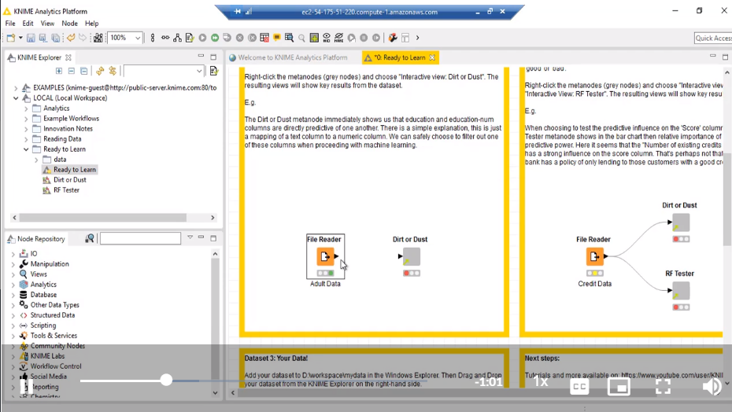

Using AWS KNIME Analytics platform to build Machine Learning model.
AWS has a plethora of tools when it comes to Analytics and Databases, be it Quicksight for dashboards, Redshift for data warehousing, SageMaker for building ML models but a good tool which stays under the radar is KNIME Analytics platform on AWS. The best thing about KNIME analytics is that you don't have to worry about resources as the platform is run on AWS through a Remote desktop and can be set up within minutes. So, let's see how we can make the best use of this platform.
First, we wil have to set up the environment where we can run KNIME. To do this we can log into our AWS account --> Go to KNIME analytics platform
Click on Continue to Configuration
Select a server region closest to your network, you might want to check the pricing for the Infrastructure and Software subscription before continuing to lauch the platform. Now scroll down to check key pair settings
Make sure to select a Key pair and download it to your local machine to ensure security for your remote workstation
Once you enter the AWS console, Click on your compute EC2, since thats the compute we chose while setting up the subscription.
Here we can see all the instances created, the instance which we just created should be up and running(i.e. it should have a green light for instance state) if that's not the case you might want to check the IP and DNS settings manually/contact the AWS support to get it fixed.
Now when you click on Launch Instance it should take you to this box where you should click on Get Password
Now browse your local machine to retrieve the Key pair that you downloaded earlier during the subscription. Use the Browse button to load this file and click on Decrpyt Password
You should see the above window where the password has been loaded, Now click on Copy to clipboard near the password. Now you can download the remote desktop file and enter the credentials you just copied.
Now the Remote Desktop connection should take you to the KNIME analytics platform. We've successfully set up the environment and the KNIME tool at this stage. Let's see how we can best utilize this tool now.
If you have your data locally/ on AWS datalake use the Node repository to load it for usage on the current platform. In the above picture you can see the small File Reader icon we've right clicked on this icon and loaded our Adult Data, as you can see there is a green light below the icon which shows that it has been successfully loaded.
This experiment that we will be doing on KNIME, we will use Adult Dataset, also known as Census-Income Dataset. This data is publicly availabe from the Machine Learning Repository which is stored at the Center for Machine Learning and Intelligent Systems at the University of California, Irvine.
This dataset contains 48,842 rows with 14 features, each extracted from the 1994 Census database
Very Important feature of KNIME is something called as Dirt and Dust node. The Dirt and Dust Node in KNIME helps us evaluate a feature's predective potential. Once you connect the file reader icon to Dirt or Dust icon, we are essentially trying to evaluate the predective potential of the adult dataset and figure out what features could be helpful for predicting target variable. Once you right click on the Dirt or Dust icon and press execute, it will generate a heatmap for us.
Here's how to visualize the heatmap generated from Dirt and Dust node.As it says in the above image, the grey values denote features indicating higher predective potential, in this case, reelationship & age, marital status & age, education & occupation are some of the variables that will help us predict the income.

Here's how we want to set up our Machine Learning Pipeline on KNIME. We want to connect File reader to a Partitioning node and then use that to split data for Learner model and Predictor node where we will send the data to be scored from there on.

The above image is how it should look once we have set up our pipeline. As you can see we will be using Random Forest as our learner node, Since, we're using Random Forest Learner we will have to use the same model for Predictor node as well. And we use the confusion matrix(Accuracy) to score our model.
You can configure the parameters of the Partitioning model by right clicking on the icon, In the above image we can see the options once you right click on the learner node, click on -> Configure
Select the Relative percentage you want to split the data for Training and Testing, In the above image you can see we've chosen 80% Training and sample to be drawn randomly.

Now we've split the data, we can move onto the learner node, right click and execute the command "execute" and wait for it to turn green
Once the learner node has finished its run, it is now ready to be scored. Go ahead and right click on Confusion matrix icon and select "execute" for it to successfully score the model, wait till it has turned green. Once it has turned green, as in the above image, right click -> Prediction Output to see the predictions. The model that the Predictor uses is created by the Learner
As you can see in the above image, an extra column for predictions have been generated. You can also right click on Confusion matrix and select Scorer to see the accuracy and other measures of the model.
The Accuracy of this model is 87%
Congratulations! You've just learnt how to build you Machine Learning pipeline on KNIME and how to best use KNIME to deduce predective power of variables from a dataset